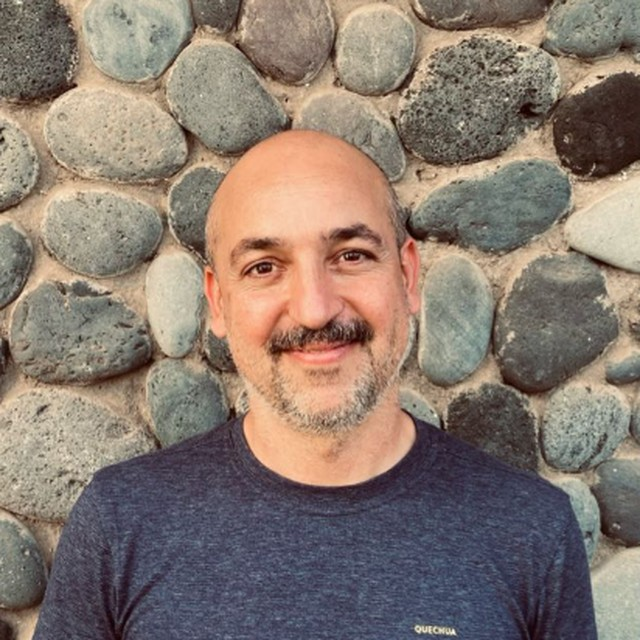

Pablo J. González
Research Reader, IPNA-CSIC, Tenerife, Spain
Volcano and earthquake geodesy, source modelling, and the software the community uses to do it. My doctoral supervisor, and the person who taught me to distrust a signal until the atmosphere has been accounted for.
Their page